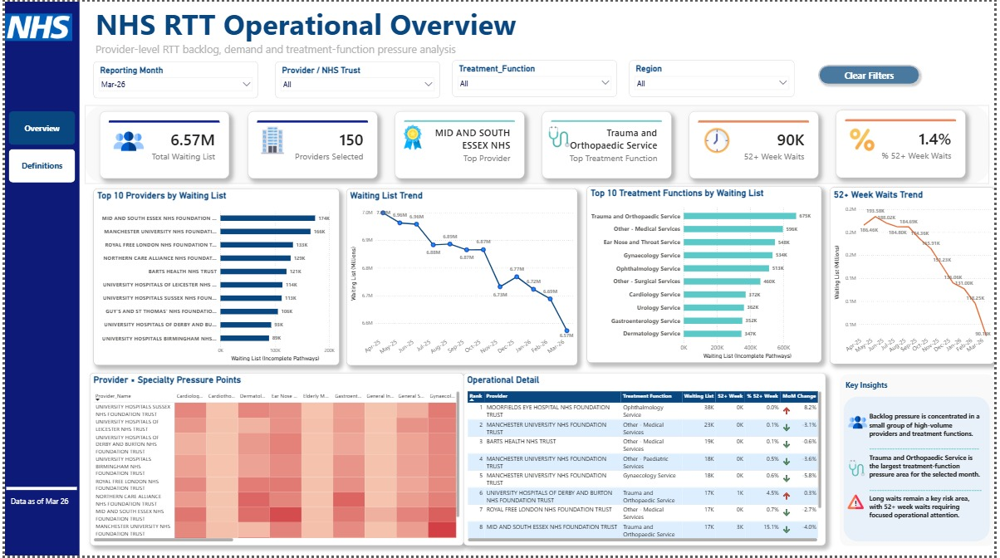
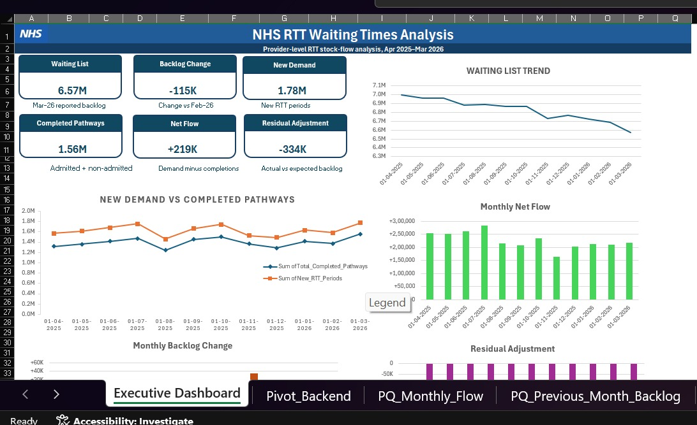
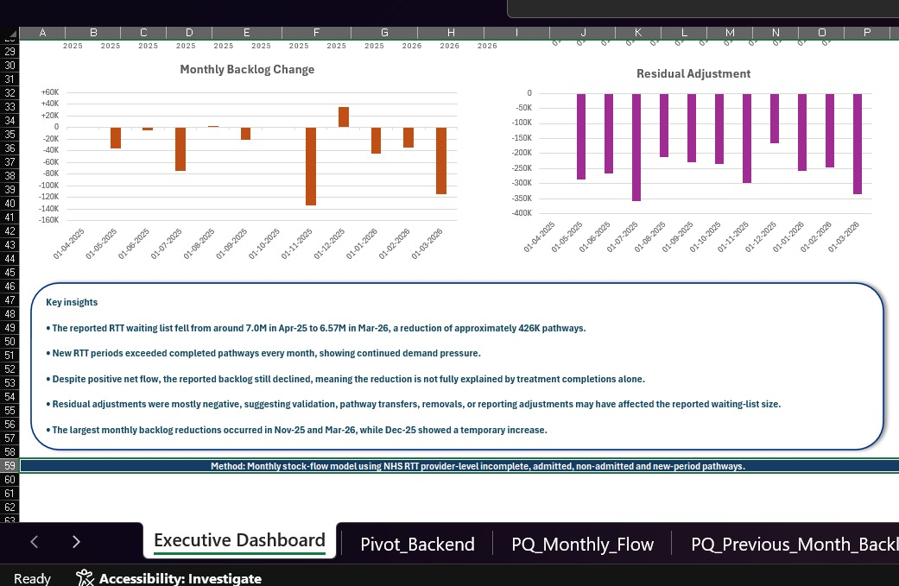
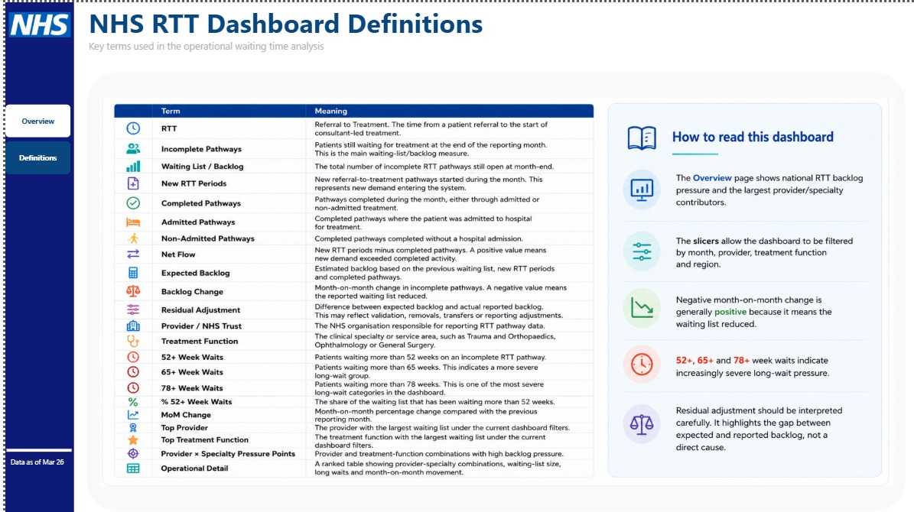

HEALTHCARE / OPERATIONS
NHS RTT Performance & Capacity Analysis
Investigating changes in NHS referral-to-treatment waiting lists, provider pressure and whether recorded backlog movement is explained by incoming and completed pathways.
A selected project case study. Figures are descriptive project findings unless explicitly stated otherwise.

The question
Where is waiting-list pressure concentrated, and can reported changes in incomplete patient pathways be explained by new demand and completed activity alone?
The project analyses public NHS Referral to Treatment data, across national and provider or treatment-function views.
Approach and workflow
Power Query cleaned monthly source data and standardised reporting dimensions. Excel provided an executive view; Power BI enabled deeper operational filtering.
- Analysed incomplete pathways, new RTT periods and completed pathways.
- Compared net flow with observed backlog change using residual adjustments.
- Explored provider-level pressure, treatment-function demand and long-wait patterns.
Why reconciliation matters
According to the repository, reported waiting-list reductions over the analysed period were not explained by treatment completions alone. Residual adjustments therefore require careful consideration rather than treating a falling headline backlog as a straightforward improvement signal.
A dashboard is more useful when it helps stakeholders see what a metric cannot fully explain.
Interpretation
Reported changes should be interpreted alongside data definitions, reporting adjustments and possible revisions. These are descriptive operational findings, not causal claims about changes in patient outcomes.
For detailed dashboard screenshots, data preparation and findings, visit the public repository.
Project visuals
Selected outputs from the work, with the source materials and code linked below.
Each figure below includes the question it helps answer, what you are looking at and the conclusion or limitation worth noticing. Open the image at full size if you want to inspect individual labels.
Operational overview
Find pressure points
The Power BI overview combines national waiting-list measures with provider rankings, specialty breakdowns, trend lines and a provider-by-treatment-function heatmap.
The takeaway: Use the slicers to compare a month or provider while remembering that counts and proportions answer different operational questions.

Executive view: demand and completions
Understand incoming and finished work
This Excel reporting view compares new RTT periods with admitted and non-admitted completed pathways, alongside the reported incomplete waiting-list total.
The takeaway: Completions alone do not necessarily explain the observed change in the month-end backlog.

Executive view: backlog movement
Read the stock-flow reconciliation
The net-flow and backlog-change panels help test whether reported waiting-list reductions are consistent with recorded new periods and completed pathways.
The takeaway: Residual adjustments help explain the gap between expected movement and reported waiting-list stock. They should not be silently treated as extra completed care.

Definitions and interpretation
Know what each KPI measures
The definitions page clarifies incomplete pathways, 52+ week waits, month-over-month comparisons and the reporting terms used throughout the dashboards.
The takeaway: Definitions are part of the analysis: consistent measures are essential before drawing conclusions about changes between providers or months.
Figures reflect the selected public-data reporting period shown on the dashboard. These are project outputs, not current NHS performance.